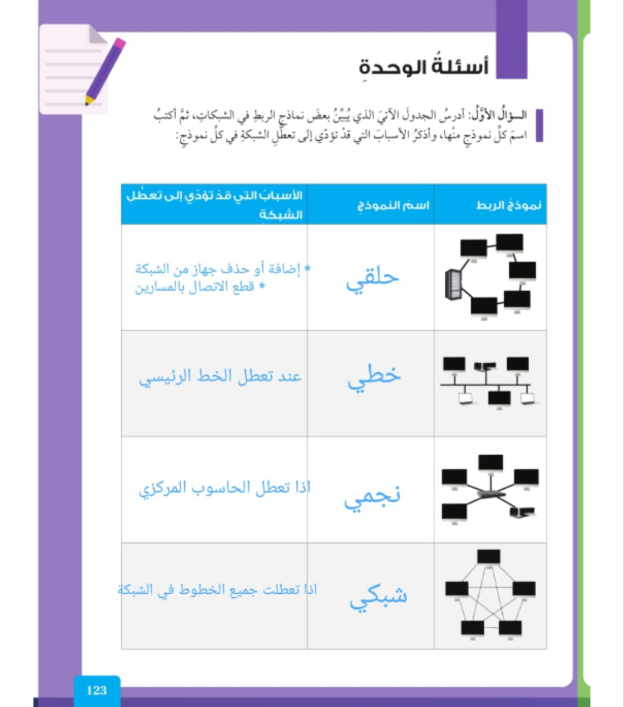
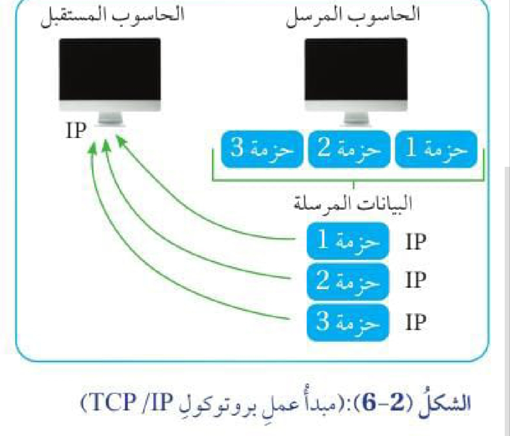

السؤال الأول
السؤال الأول:

السؤال الثاني
أضع إشارة (√) بجانب العبارة الصحيحة، وإشارة (x) بجانب العبارة غير الصحيحة:
الإجابات النموذجية:
السؤال الثالث
إلام يرمز كل من الاختصارات الآتية؟
الإجابات النموذجية:
السؤال الرابع
أوضح الفرق بين بروتوكول (HTTP) وبروتوكول (HTTPS).
الإجابة النموذجية:
HTTP: يسمح بتصفح شبكة الإنترنت.
HTTPS: يسمح بتصفح شبكة الإنترنت بصورة آمنة.
السؤال الخامس
أذكر مثالًا على كل نوع من أنواع الشبكات.
الإجابات النموذجية:
1. شبكة المنطقة الشخصية (PAN): اتصال الطابعة بجهاز الحاسوب.
2. شبكة المنطقة المحلية (LAN): مختبر المدرسة.
3. شبكة المنطقة الحضرية (MAN): شبكة تضم جامعة.
4. شبكة المنطقة الواسعة (WAN): شبكة الإنترنت.
السؤال السادس
أرسم مخططًا يبين كيفية نقل البيانات بين الجهاز المرسل والجهاز المستقبل بواسطة بروتوكول (TCP/IP)، وأضمنه أشكالًا توضيحية من برنامج معالجة النصوص (Word).

الإجابة النموذجية:
يوضّح المخطط انتقال البيانات من الجهاز المرسل إلى الجهاز المستقبل عبر الشبكة باستخدام بروتوكول (TCP/IP).